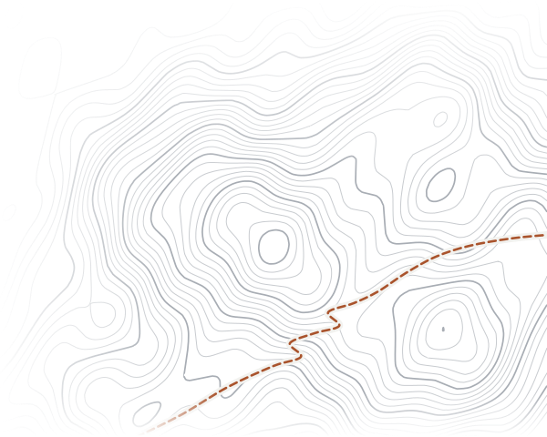

OPEN TRAIL SCIENCE
Thru-Hiker Survey
How does your thru-hike compare?
About 10 minutes, no names or accounts. Every answer goes into a free, open dataset on long-distance hiking.
PCTATCDTTMBCAMINO+ more

About 10 minutes, no names or accounts. Every answer goes into a free, open dataset on long-distance hiking.